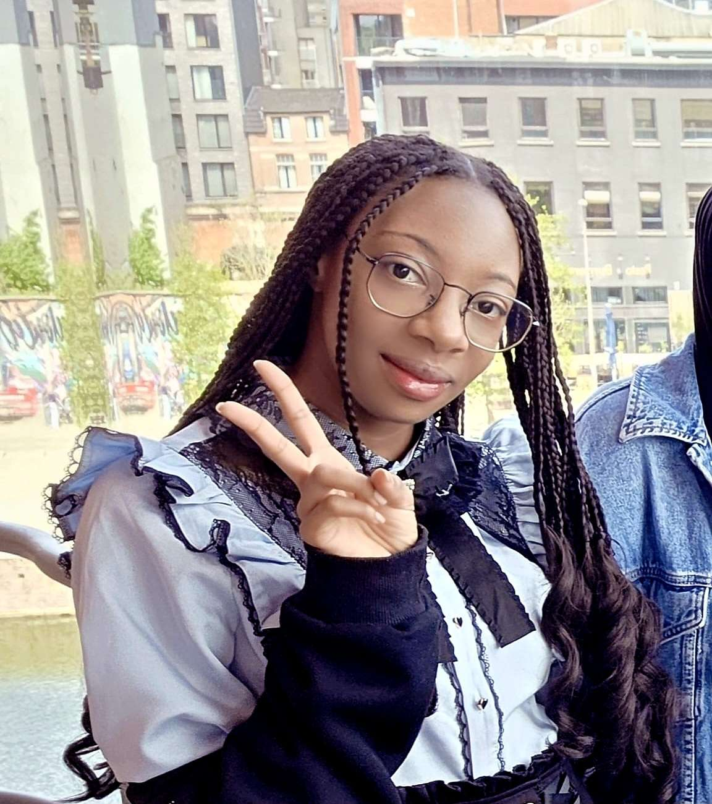

Zayd Ait Daoud
Lead Programmer
Zayd is our lead programmer, with vast experience in Java
and the JavaFX Framework. He is able to lead the team to great
results as well as being able to recreate the vision of our team
in code.
“I’m a passionate and curious individual who enjoys exploring new ideas
and pushing creative boundaries. I love spending my time on hobbies that challenge me,
whether it’s working on personal projects, diving into games, or learning new skills.
I’m driven by a desire to grow, express myself, and make meaningful contributions through what I enjoy."

LaTavia Van Dams
UI/UX
LaTavia is responsible for giving our team a visual direction
capable of both advanced JavaFX styling and front end development
"I’m drawn to the visual and design side of things.
I enjoy learning how small details like color or layout can improve the overall feel of a project.
Working on the look and feel of software is what I'd like to improve in."

Calin Vasilica
Server-side Guru
Calin is the backbone of the team - making sure that our server-side
systems work accordingly and that we are able to secure our database.
"I am passionate about software development, system infrastructure, and cybersecurity.
I have a strong interest in technology, physics, and exploring complex systems to develop effective,
well-informed solutions."
Alexander Sorodoc
All-rounder
With a large array of interests, Alex is able to contribute into all
areas, whether it'd be game-dev, server-side troubleshooting, or web development.
"My passions range from technology, music, and space. I spend my
free time either playing guitar, reading, or exercising."